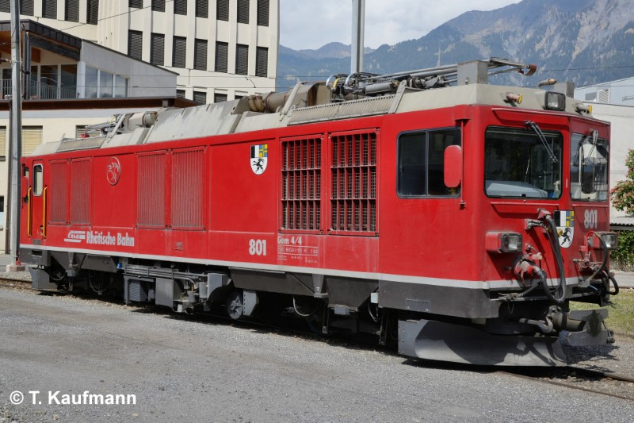
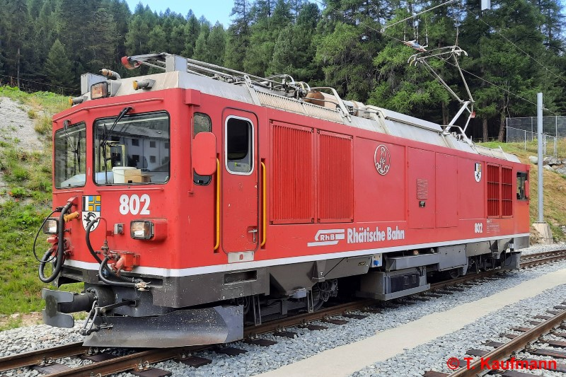

Allgemein
| Baujahr | 1966 |
| Einsatz | BB (Diesel + Elektrisch) StN, ChA (Diesel) |
| Antriebstechnik | Dieselelektrischer Antrieb (2 Dieselmotoren) |
| Leistung | Fahrdraht: 1020 PS / 750 kW Dieselmotor: 1101 PS / 810 kW |
| Ergänzungsbremse | elektrische Bremswiderstände |
| Stationiert | Bahndienst, Infrastruktur |
Technische Daten
| Geschwindigkeit | 65 km/h |
| Länge | 13.87 m |
| Gewicht | 50 t |
| Bremsgewicht | 50 t |
| Magnetschienenbremse | 12 t (BG total = 62 t) |
| Feststellbremse | Fsp 70 kN (36 t) |
Fahrzeugausrüstung
| Nylatron-Pufferplatten | keine |
| Vielfachsteuerung | 61 polig (Wurm Seite TIR) |
| Zugbeeinflussung | ZSI 127 |
| Heizleitung | BB (1000 V) 1000 V-Steckdose Schneeschleuder |
| Speiseluft-Leitung | ja |
| Bremssystem | Vakuum-Hauptleitung |
| LBT-Leitung | ja |
| Steuerleitung Spurpflug | ja |